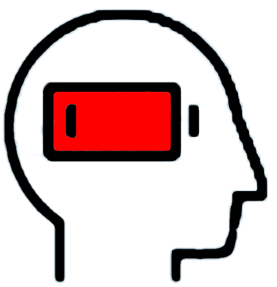
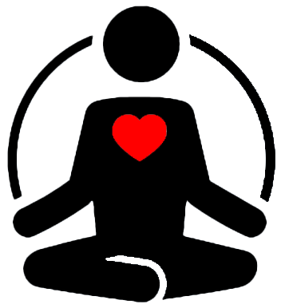

| |
Emotional WellbeingEmotional wellbeing means being happy and satified with life. It is a feeling of goodness about yourself and having positive emotions of joy and love. Opening up about bottled emotional to someone, whether it is about school work/life, your job, relationship problems or family problems, there will always be someone there to listen. Opening up to someone may be scary but once you start talking, it will be hard to control the emotional that follow. You will also feel so type of relieve that comes with opening up. |
|  |
Mental WellbeingMental wellbeing is about a feeling of belonging to a community ad contributing and connecting to a society. For you it might be school, university, clubs etc. Joining clubs or meeting up with friends can be kind of like breathing freash air. It's freash and nice and it's something that you knew you should have done earlier. Sometimes even chilling with your siblings might not even seem bad. Having company is always good for your mental wellbeing. You don't necessarily have to talk to them, but being in their presence if a good feeling. |
|  |
Spiritual WellbeingSpiritual wellbeing is about feeling connected to a higher power. It is a feeling of peace and purpose in life. Many people find that meditation is a way of relaxing and feeling free. |
Physical WellbeingPhysical wellbeing is about staying healthy and taking care of your body. It is about maintaing a healthy balance and having a well functioning body. You don't necessarily have to go to the gym to keep fit. By just excersing a few times a day like taking a walk before or after dinner. Walking the dog or just going to the park is a type of physical excerise. Biking or scootering to places is a type of physical exercise that is not only benifiting you but also the environment. |
External sources and links for more information
|